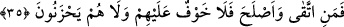

O nâzenîni firâşında uyku tutmazdı
Firâş-ı nâzına serpmezse gülsuyu, hayfâ!
Ne hâle geldi o gül-ten, gelin bakın şimdi:
Firâş-ı kabrini etti dikenler istîlâ
“Her ümmet için bir ecel vardır.” Yani Allah’a seyr ilallah ehlinden her topluluk için
bir ecel, cennete ve cehenneme doğru belli bir müddet ve vakti tâyin edilmiş bir mühlet
vardır. Allah’ın ezelde takdir ettiği şekilde “ecelleri gelince” müddetleri bitince “ne
bir an geri kalırlar, ne de öne geçerler.” Bu, dostların (velîlerin) gönüllerini Hakk’a
yöneltmeleri için bir va‘d ve düşmanların nefislerini terbiye için bir vaîddir. et-
Te’vîlâtü’n-Necmiyye’de böyle denilmektedir.
35. Ey Âdem oğulları! Size kendi içinizden ayetlerimi anlatacak peygamberler
gelir de kim (onlara karşı gelmekten) sakınır ve kendini ıslah ederse, onlara korku
yoktur ve onlar üzülmeyeceklerdir.
“Ey Âdem oğulları,” Hitap bütün insanlaradır. “size kendi içinizden” yani kendi
cinsinizden “elçiler gelip de ayetlerimi anlattıkları” hükümlerimi, emir ve
yasaklarımı açıkladıkları “zaman” onları yalanlamaktan “sakınıp uslananlara”
amelini ıslah edip O’nun ayetlerini anlatan Rasûlüne itaat edenlere “korku yoktur.”
Onlar, ileride âsîlerin başına geleceklerden korkmazlar “ve onlar” ikram ve rızâ
yurdunda müttakîlere hazırlananların lezzetine gark oldukları için dünyada elde
edemeyip kaybettikleri şeylere “üzülmeyeceklerdir.”
Peygamberlerin gelmesi, Allah’ın ilmine nisbetle katiyetle vuku bulacak bir iştir.
Fakat ayette kesin olarak bilinen bir konu, şüpheliymiş gibi belirtilmiştir. Bu, şu hususa
dikkat çekmek içindir: Peygamberlerin gönderilmesi caizdir. Allah dilerse
göndermemeye de kadirdir. Peygamber göndermemekle de günaha girmiş olmaz. Çünkü
ne aklen ne de şer‘an Allah Teâlâ üzerine bir işi yapmak vacib değildir. Fakat ilâhî
hikmet peygamberlerin gönderilmesini gerekli kılmıştır. Çünkü bunda pek çok hikmet ve
maslahatlar vardır.
[26]. Buhârî, Savm, 20. 48; Müslim, Sıyâm, 57-58
[27]. bk. Buhârî, Temennî, 9; Savm, 20. 48; Müslim, Sıyâm, 57-58, 60; Müsned, II,